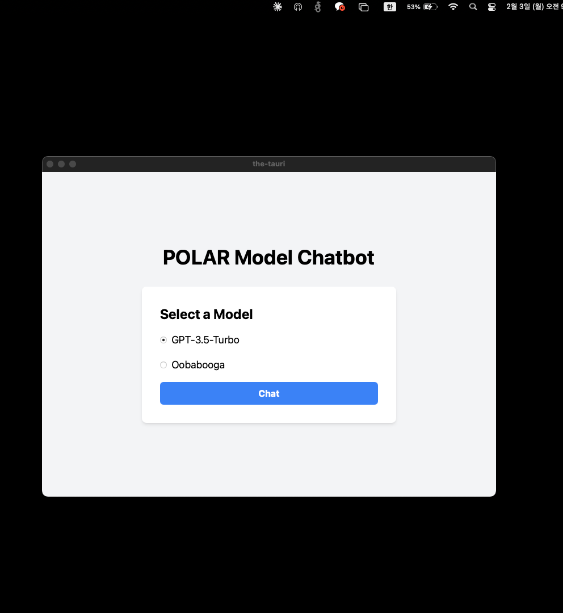

Tauri - 크로스 플랫폼 앱 개발 프레임워크
개요
Tauri는 데스크톱 애플리케이션을 구축하기 위한 현대적인 프레임워크입니다.
- Backend: Rust
- Frontend: webview를 통한 HTML, CSS, JS (React.js, Next.js 등) 지원
{kind=link}
주요 장점
- 매우 작은 바이너리 크기 (Electron 대비 1/10 ~ 1/20 수준)
- 높은 성능과 낮은 메모리 사용량
- Rust의 안전성과 성능 이점
- 강력한 보안 기능 내장
- 크로스 플랫폼 지원 (Windows, macOS, Linux)
개발자 관점에서의 장점
- npm 생태계 활용 가능
- 웹 개발 경험을 데스크톱 앱 개발에 활용
- 시스템 API에 대한 안전한 접근 제공
- 커스텀 플러그인 개발 가능
고려사항
- Rust 학습 곡선이 있을 수 있음
- Electron에 비해 생태계가 상대적으로 작음
- OS 네이티브 기능 사용 시 추가 Rust 개발 필요
설치 및 설정 가이드
1. Rust 설치
curl --proto '=https' --tlsv1.2 -sSf https://sh.rustup.rs | sh
2. Next.js 프로젝트 생성
npx create-next-app@latest --use-npm
3. tsconfig.json 또는 jsconfig.json 설정
{
"exclude": [
"node_modules",
"src-tauri"
]
}
4. next.config.js 설정
/** @type {import('next').NextConfig} */
const nextConfig = {
output: 'export',
}
module.exports = nextConfig
5. Tauri 관련 패키지 설치
npm install --save-dev @tauri-apps/cli@">1.0.0"
npm install @tauri-apps/api@1
6. package.json 스크립트 추가
{
"scripts": {
"tauri": "tauri"
}
}
7. Tauri 초기화
npm run tauri init
8. main.rs 설정
#![cfg_attr(not(debug_assertions), windows_subsystem = "windows")]
fn main() {
tauri::Builder::default()
.run(tauri::generate_context!())
.expect("error while running tauri application");
}
build하면 설치 프로그램도 자동으로 생성된다.
{kind=link}
어플리케이션을 실행하면 이렇게뜬다.

{kind=link}
향후 발전 방향
- 사용자 컴퓨터의 내장 GPU나 NPU를 활용한 On-device AI 기능 구현
- LLM 기반 에이전트 통합
- 내장 NPU를 활용한 모델 학습 및 LLM 구동
추가 정보
- tray icon 설정 등 상세 기능은 공식 홈페이지 문서 참조
- 빌드 시 설치 프로그램 자동 생성
- UI는 기존 웹 개발 방식으로 구현 가능